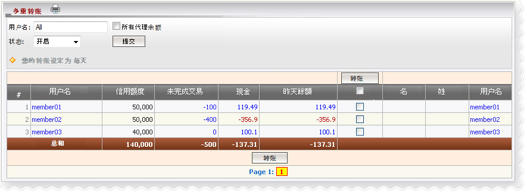

转帐
定义:
转让是指的金额，需要转移到发件人为赢输付款目的。我们有2种转帐方式：单转帐或多次转帐。你只能转帐如果您允许转帐当日，这就是所谓的转帐条件，其中包括：每日和每周转帐（周一 - 周日）。
注意:
- 讯息将会出现通知您允许日起作出转帐.
- 转帐交易必须完成于中午 12 时至晚上 11:59 时 (GMT +8).
- 转帐只能够在账户状态已 活跃/ 关闭/ 暂停.
- 昨日余额 > 0 -->代理输.
- 昨日余额 < 0 --> 代理赢.
- 最高代理转帐金额是会员总赢输.
- 子帐号必须给予转帐允许以使转帐.
- 每个会员,每日转帐次数限制为1次.

转帐
用词注解:
- 信用: 最初金额的会员给予他/ 她代理投注目的.
- 未完成交易: 会员总金额在 进行 / 等待注单.
- 余额: 会员总金额赢输包括转帐金额.
- 昨日余额: 会员总赢输至昨日.
如何理解报告:
从上述的数字，member01最初给予5万，他/她的赌注金额100元注单在进行，目前他/她赢得今日和昨日的余额119.49。
如何转帐:
在点击昨日每个会员的余额，使转帐或列'昨日的检查，然后点击'转帐'按钮来进行多重转帐给所有会员昨日的余额是不同的 0。